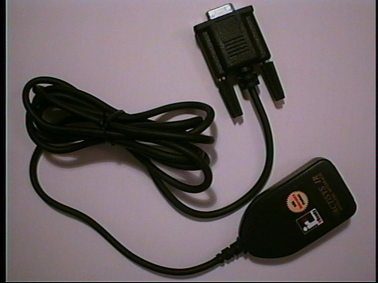
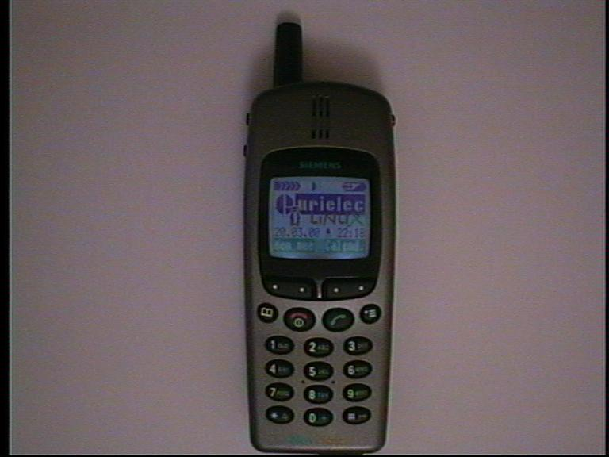
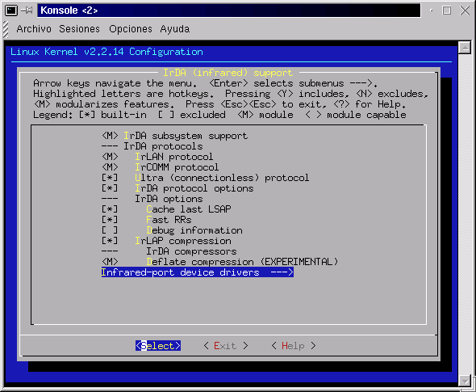
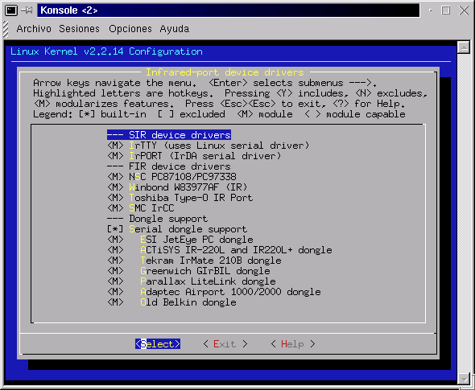
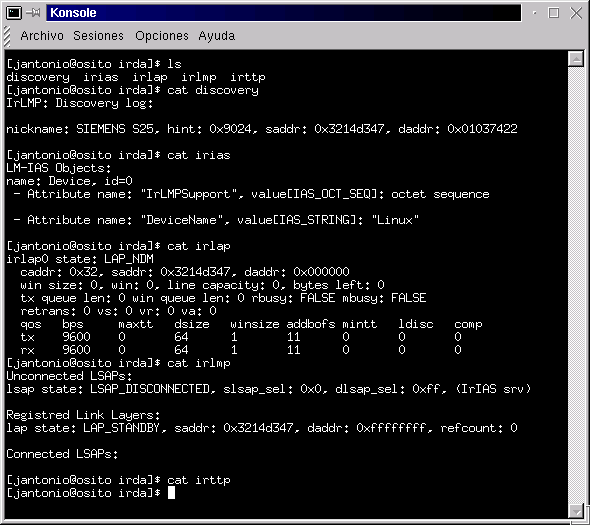

Linux-IrDA (I) : Instalación y Configuración
Autor: Juan Antonio Martínez Castaño
E-mail:
jantonio@dit.upm.es
Web:
http://www.dit.upm.es/~jantonio
Copyright
Este artículo es Copyright 2000 de Juan Antonio Martínez Castaño y se
distribuye bajo las siguientes condiciones:
- Su distribución mediante medios electrónicos es libre, siempre y
cuando se conserve el texto íntegro y en su formato HTML original, haciendo
especial mención a la conservación del mensaje de copyright
- El autor y dueño del copyright cede los derechos de publicación impresa
a Prensa Técnica S.L., autorizando a ésta a realizar las modificaciones al
texto que considere oportunas para su publicación
- La distribución o copia, total o parcial, en cualquier medio impreso por
parte ajena a Prensa Técnica S.L. Está expresamente prohibida
- Ningún particular podrá poner este fichero en un servidor Web de acceso
público sin el consentimiento expreso del autor y de Prensa Técnica S.L.
Indice
Entradilla
Continuando con la serie dedicada al soporte de infrarrojos en Linux, vamos a hablar en esta ocasión del Protocolo IrDA y de como configurar Linux para su soporte y utilización
Presentación
En el número anterior de Linux Actual, se describió la utilización de
diversos dispositivos infrarrojos desde Linux, haciendo hincapié en el control
de mandos a distancia remotos. En esta entrega describimos el estandard IrDA,
y cómo se implementa en Linux, indicando los detalles de instalación y configuración. Para finalizar la serie, en el próximo número de Linux Actual se describen
diversos programas y aplicaciones que utilizan este protocolo
Introducción
En el número anterior vimos cómo se puede utilizar Linux para simular
o controlar equipos que funcionan mediante dispositivos de infrarrojos del
tipo mandos a distancia. El sistema , aunque útil, no consituye un estándard
válido, pues cada fabricante tiene su sistema, y sus protocolos
|
|
| Figura 1: El logotipo del Proyecto Linux-IrDA |
|---|
Ante este hecho, y dada la evidente utilidad de una comunicación
infrarroja entre dispositivos, una serie de fabricantes de hardware y software
han creado la Infrared Data Association (IrDA), un estandard para
la comunicación entre equipos mediante dispositivos infrarrojos. Palmtops,
ordenadores portátiles, teléfonos móviles, y demás dispositivos acogidos a
dicho estandard pueden compartir entre ellos diversos datos.
|
Una serie de fabricantes de hardware y software han definido IrDA, un estandard
de protocolos de comunicación por infrarrojos
|
|---|
| | |
Linux IrDA es el proyecto de porting del estandard IrDA al sistema
operativo Linux. Es miembro del consorcio desde Febrero de 1999. La
implementación IrDA de Linux no está certificada por el consorcio, si bien
es una de las más completas y flexibles.
Pero ¿en qué consiste el estandard IrDA?. La implementación Linux trata
los dispositivos de infrarrojos como un dispositivo de red, estableciéndose
una serie de niveles al estilo OSI:
|
Linux-IrDA está estructurado en capas al estilo de los niveles OSI
|
|---|
| | |
- El nivel físico IrPHY especifica el formato de trama y codificación
, y las características eléctricas, ópticas y físicas del enlace. Se tienen los
siguientes dispositivos:
- Dispositivos tipo serie (SIR), con velocidades de transferencia de
hasta 115000 baudios. Normalmente están asociados a un puerto serie
en los portátiles, y se pueden utilizar como puertos serie estandard
Dentro de esta categoría podemos incluso encontrar adaptadores que
convierten un puerto serie estandard en un puerto IrDA. Se conocen
como IrDA Dongles La figura muestra uno de éstos, el ActiSys
220L+, uno de los más utilizados bajo Linux
Estos dispositivos son los más utlizados para comunicaciones con
notepads y teléfonos móviles
|

|
| Figura 2: Adaptador IrDA-RS232 Actisys 220L+ |
|---|
- Dispositivos de Alta Velocidad (FIR) de velocidades de transferencia
de 4Mbps. Se utilizan para la conexión infrarroja entre equipos e
impresoras en una "red infrarroja"
- Dispositivos de Muy Alta Velocidad (VFIR) -hasta 16Mbps-. No están
soportados en Linux
- La capa de enlace se denomina IrLAP ( link access protocol )
gestiona el entramado de paquetes, ventaneado de tramas, etc. Linux soporta
además la compresión de datos en la trama, que si bien no es parte oficial del
estandard IrDA, no colisiona con éste ( se negocia a nivel de enlace )
mejorando las prestaciónes en la comunicación entre dos sistemas Linux
|
|
| Figura 3: Logotipo del IrDA Standard Association |
|---|
- La capa de red se gestiona desde el IrLMP ( link management
protocol ), encargandose del control de conexiones, multiplexado de éstas,
registro de servicios, así como el poder integrar múltiples conexiones físicas.
Linux es capaz de soportar diversos dispositivos IrDA en un solo sistema, a la
par que cada dispositivo es capaz de controlar hasta 16 periféricos de forma
simultánea. No todos los equipos IrDA soportan conexiones múltiples, por lo que
el usuario deberá cuidar que no haya más de un dispositivo conectado por
infrarrojos. Como anécdota, el autor bloqueó un PalmPilot y un teléfono
Siemens S25 al integrarlos en una red de cinco dispositivos infrarrojos....
Linux sobrevivió, por supuesto :-)
- La capa de transporte se denomina IrTTP ( tiny transport protocol )
. Se encarga de controlar la fragmentación y desfragmentación de paquetes,
control de flujo y de conexiones, etc
La implementación IrDA de Linux
Lo descrito hasta ahora es estándard para toda implementación IrDA.
a nivel de sesión y aplicación es donde se encuentran las mayores diferencias
entre Linux y otros "sistemas" operativos:
- La emulación de puerto serie IrCOMM es común a casi todas las
implementaciones IrDA. Permite asociar un puerto serie a un dispositivo IrDA
y operar con el como si de éste se tratara. Muchos teléfonos móviles llevan
incorporado un módem que se puede controlar con comandos AT a través del
puerto de infrarrojos. Linux además proporciona dos tipos de dispositivo
serie: IrPORT para simulación de puerto, e IrTTY para simulación de terminales
- La emulación de impresoras se realiza a través del protocolo IrLPT.
Linux soporta modo cliente y servidor, esto es: se puede tanto mandar datos
a una impresora como simular una impresora
- La emulación de Red Local IrLAN , aunque definida por el
estandard, solo ha sido implementada en Linux. Permite asociar dispositivos
de red a puertos infrarrojos, tanto punto a punto como multipunto. Podemos
asociar direcciones IP, hacer ping, ftp, etc a través del puerto como si de una
interfaz de red se tratara. Es más, utilzando modo SIR y el protocolo IrCOMM
podemos establecer conexiones PPP por infrarrojos
- IrMC (Infrared for Mobile Comunications) es un protocolo diseñado
por Nokia para algunos de sus modelos ( el 6110 es el más conocido ) para
la transferencia de datos de agenda telefónica. Está en desuso, pues
sólo es soportado por Nokia y es incompatible con el resto del mundo IrDA.
Linux no lo soporta
- IrOBEX (Infrared Object Exchange) es el estandard de transferencia
de datos a través de IrDA. Permite transferir ficheros, datos de agenda,
imágenes, etc. Está basado en una especie de HTML en el que se especifica
el tipo de datos, la longitud, etc. Linux no lo implementa a nivel de núcleo
sino a través de una biblioteca que se ejecuta desde espacio de usuario. La
foto que ilustra la figura muestra el logotipo que el autor ha transferido
a su teléfono móvil a través de éste protocolo
|

|
| Figura 4: Teléfono móvil Siemens S25, con soporte IrDA |
|---|
- Por último, y tambien exclusivo de Linux, existe la posibilidad de
utilizar sockets y conexiones CORBA con el puerto de infrarrojos, existiendo
un API al efecto
Es de destacar que Los demás sistemas operativos no implementan ni de lejos
todas estas funcionalidades: La normativa IrDA especifica que sólo son
obligatorios los protocolos de conexión, la emulación de puerto serie, y el
cliente de impresión. En sistemas Windows hacen falta programas adicionales
-no siempre proporcionados por el fabricante- para el resto de las
funcionalidades. En concreto no es posible la simulación de red local, ni
por supuesto el API de sockets...
Preparación y compilación del núcleo
Para utilizar IrDA en nuestra máquina necesitamos tener el núcleo
preparado al efecto. Linux-IrDA se soporta en las series 2.2.X y 2.3.X, no
estando soportado en la serie 2.0.X.
|

|
| Figura 5: Especificación de protocolos IrDA |
|---|
Las ilustraciones muestran la configuración del núcleo referida
al puerto de infrarrojos, relativos a la versión 2.2.14 del núcleo. Para
obtener una funcionalidad completa, es preciso añadir un parche al núcleo.
En el CD-Rom que se acompaña con la revista se incluye una distribución del
núcleo 2.2.14, así como los parches necesarios
El lector deberá escoger el módulo adecuado en su caso, o bien poner
todos los dispositivos físicos de infrarrojos como módulos cargables. A menos
que se vaya a utlizar la emulación de red, es recomendable configurar el
puerto en modo SIR, pues el modo FIR no está completamente desarrollado.
|

|
| Figura 6: Especificación de dispositivos IrDA |
|---|
En la configuración del modo SIR existen dos opciones: la primera (IrTTY)
utiliza el driver estandard de puerto serie que linux proporciona. En aquellos
equipos en que el puerto de infrarrojos se configura desde la BIOS y se asigna
a un puerto serie, ésta será la opcion deseada. Del mismo modo, si en el
arranque de Linux el puerto de infrarrojos es detectado como un puerto serie,
usaremos este modo
La segunda posibilidad es usar un driver específico (IrPORT). Deberemos
usar esta opción cuando el puerto no es reconocido como tal en arranque, o
tenemos problemas de eco, o de "ruido" en el enlace. IrPORT es una emulación
half-duplex de puerto serie. En este caso deberemos insertar el módulo
expresamente en el arranque, mediante insmod irport io=0xYYY irq=YYY
Configuración de puertos y dispositivos
Una vez parcheado y recompilado el núcleo llega el momento de configurar
el sistema para soporte de IrDA. Para ello, empezaremos desde la BIOS del
sistema, verificando que el puerto de infrarrojos está activado, comprobando a
qué puerto serie está asociado, y si vamos a usar el modo FIR, comprobar el
canal de DMA y el puerto que va a utilizar
|
Una vez instalado el núcleo es preciso proceder a la configuración del sistema
|
|---|
| | |
El siguiente paso consiste en compilar e instalar las aplicaciones de gestión.
En el CD-Rom se acompaña la última versión de las IrDA utils. Como siempre,
invocamos el conjuro secreto: ./configure; make; make install
Ahora viene la parte complicada: los ficheros de configuración.
- El primer paso consiste en la creación de un fichero para la inicialización
de IrDA en arranque. el Listado 1 muestra el que utiza el autor:
jantonio@osito$ cat /etc/rc.d/init.d/irda
#!/bin/sh
#
# irmanager This shell script takes care of starting and stopping
# irmanger (irda daemon).
#
# chkconfig: 2345 9 95
# description: lrmanager is the irda daemon required for irda to work \
# properly.
#
# Source function library.
. /etc/rc.d/init.d/functions
# Source networking configuration.
. /etc/sysconfig/network
# Check that networking is up.
[ ${NETWORKING} = "no" ] && exit 0
[ -f /usr/sbin/irmanager ] || exit 0
# See how we were called.
case "$1" in
start)
# Start daemons.
echo -n "Starting irmanager: "
daemon irmanager -d 1
echo
;;
stop)
# Stop daemons.
echo -n "Shutting down irmanager: "
killproc irmanager
killall irattach
echo
;;
status)
status irmanager
;;
restart|reload)
$0 stop
$0 start
;;
*)
echo "Usage: irda {start|stop|restart|reload|status}"
exit 1
esac
exit 0
|
| Listado 1: Script de arranque del sistema IrDA |
|---|
- El segundo paso es la creación de los dispositivos especiales en el
/dev. Hay que hacer constar que el IR-Howto está desfasado, y que la
documentacion que aporta es incorrecta. el listado 2 ilustra estos dispositivos,
así como el procedimiento para crearlos:
root@cochito# mknod /dev/ircomm0 c 161 0
root@cochito# mknod /dev/ircomm1 c 161 1
root@cochito# mknod /dev/irlpt0 c 161 16
root@cochito# mknod /dev/irlpt1 c 161 17
root@cochito# ln -s /dev/ircomm0 /dev/irnine
root@cochito# ls -l /dev/ir*
crw-r--r-- 1 root root 161, 0 Mar 20 19:32 /dev/ircomm0
crw-r--r-- 1 root root 161, 1 Feb 17 01:40 /dev/ircomm1
crw-r--r-- 1 root root 161, 16 Mar 21 00:03 /dev/irlpt0
crw-r--r-- 1 root root 161, 17 Mar 21 00:03 /dev/irlpt1
lrwxrwxrwx 1 root root 12 Feb 15 23:07 /dev/irnine -> /dev/ircomm0
|
| Listado 2: Creación de los dispositivos |
|---|
- El tercer paso consiste en configurar el fichero /etc/conf.modules.
El listado muestra las opciones utilizadas por el autor. Si utilizamos
dispositivos dongle será necesario incluir información sobre el tipo
de dispositivo que vamos a utiliar. Encontraremos dicha información en el
fichero /usr/src/linux/include/irda.h
alias tty-ldisc-11 irtty
alias char-major-161 ircomm-tty
alias irda-dongle-3 actisys
-
Por último hay que configurar los diversos drivers y dispositivos que
vamos a conectar. en el directorio /etc/irda encontraremos diversos
ficheros, en los que se especifica la configuración para la red, las impresoras,
etc. El principal fichero es /etc/irda/drivers que indica la
configuración física de nuestro sistema.
|
Existen dos demonios: irattach e irmanager
|
|---|
| | |
En Linux IrDA funciona mediante dos demonios. El primero, irmanager se encarga de monitorizar el puerto de infrarrojos y detectar los diversos
dispositivos que se enganchan. El segundo, irattach asocia un
dispositivo de infrarrojos a un determinado driver. El listado describe
el fichero utilizado por el autor. El lector deberá descomentar, o en su caso
editar la entrada que se ajuste a su configuración
#! /bin/sh
#
# drivers
#
# Initialize and shutdown IrDA device drivers.
#
# This script should be invoked with two arguments. The first is the
# action to be taken, either "start", "stop", or "restart".
#
action=$1
device=$2
case "${action:?}" in
'start')
irattach /dev/ttyS1 # The second serial port is an IrDA port
# irattach /dev/ttyS0 -d actisys+ # Attach an ActiSys 220L+ dongle to the first serial port
# irattach /dev/ttyS0 -d tekram
# insmod pc87108 # If your machine as a pc87108 FIR chipset
# modprobe uircc # Sharp UIRCC chipset
;;
'stop')
killall irattach # ... or something. Currently not used
;;
'restart')
/sbin/ifconfig ${device:?} down up
;;
esac
|
| Listado 3: fichero de configuracion de dispositivos irda |
|---|
- Esto es todo. Ejecutamos ahora /etc/rc.d/init.d/irda start, y el sistema
debe arrancar sin problemas. Para comprobarlo, en el fichero
/var/log/messages deberá aparecer que la carga del dispositivo irda es
correcta, y aparecerá un nuevo directorio en /proc/net/irda
La figura ilustra el contenido de /proc/net/irda. Los diversos ficheros
ilustran los dispositivos encontrados, los enlaces establecidos, así como los
datos emitidos y recibidos por dichos enlaces.
|

|
| Figura 7: Contenido de /proc/net/irda |
|---|
El problema más común suele ser el fallo en la asociación del dispositivo
físico al lógico. Comprobar que irattach funciona correctamente, que el
puerto serie está asociado en la BIOS al puerto de infrarrojos (en modo SIR),
o bien que los parámentros asociados al modo FIR son los correctos. Si se
dispone de Windows en el mismo equipo, y éste tiene el IrDA instalado, una
mirada a la configuración del puerto nunca está de más...
Conclusiones
IrDA proporciona un protocolo estandard para la comunicación entre
equipos a través del puerto de infrarrojos. Existen diversas implementaciones
y niveles en el protocolo, siendo la implementación Linux la más completa con
diferencia respecto a sus competidores
|
La implementación IrDA de Linux es mucho más completa que la de otros "sistemas operativos"
|
|---|
| | |
En éste artículo hemos hecho una introducción al protocolo IrDA y a su
implementación en Linux. Hemos visto como se configura el núcleo y se generan
los dispositivos de configuración, y dejado nuestro sistema listo para empezar
a trabajar
En el próximo número de Linux Actual, estudiaremos los diversos
programas y aplicaciones que existen en Linux para el uso del puerto IrDA.
Veremos como se monta una red local, como se emulan terminales, o se conecta
a Internet a través del teléfono móvil por infrarrojos; como crear un
servidor de impresión remota, o cómo establecer comunicación con un
un PalmPilot. Por último veremos el API de programación y el uso de sockets
a traves del puerto IrDA
Referencias
- Desgraciadamente el InfraRed-HOWTO está muy atrasado, y no contempla las
últimas actualizaciones e implementaciones. No obstante continúa siendo la
principal fuente de referencia sobre la instalación y configuración. En este
artículo se describen las principales diferencias, especialmente en lo que a
los nombres y descriptores de dispositivos se refiere
- La página oficial del proyecto Linux-IrDA es:
http://www.cs.uit.no/linux-irda
En ella, el lector encontrará información actualizada sobre el proyecto, lista
de dispositivos soportados y nivel de compatibilidad, así como diversos enlaces
listas de correo y documentación
- La página oficial sobre IrDA es:
http://www.irda.org. Allí encontrará el lector
datos sobre el protocolo, detalles técnicos, lista de participantes en el
consorcio, etc...
- El proyecto Open-OBEX tiene su propia página:
www.ravioli.pasta.cs.uit.no/open-obex. Allí encontrará el lector datos sobre el estado del arte, y diversos
programas de intercambio de datos a través de este protocolo
- En el CD-Rom que se acompaña con la revista se incluyen todos los programas
aquí detallados, así como una copia de la página web del proyecto Linux-IrDA